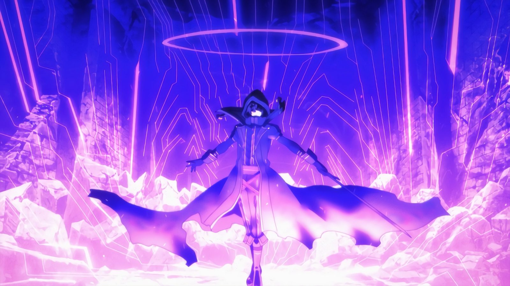

Рандомный Персонаж из Манги или Манхвы
Сид Кагено (яп.シド・カゲノー, Кагено Сидо?), ранее Минору Кагено (影野実, Кагено Минору Минору?), является титульным антигероем и протагонистом серии "Возвышение в тени". После преждевременной смерти он перевоплощается в мир мечей и колдовства. Выбрав Тень в качестве своего псевдонима, он возглавляет секретную организацию "Сад теней". Он живет нереализованными фантазиями о чунибье (厨二病?; по-английски "синдром восьмиклассника"), представляя себя загадочным теневым брокером, не подозревая, что его творческие сценарии близки к истине.